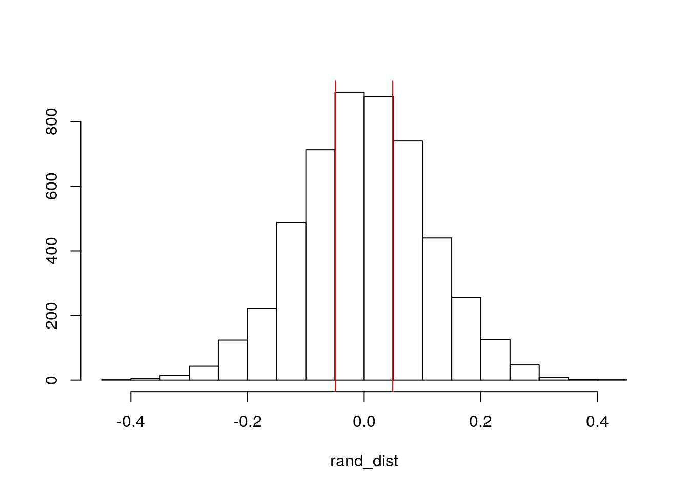
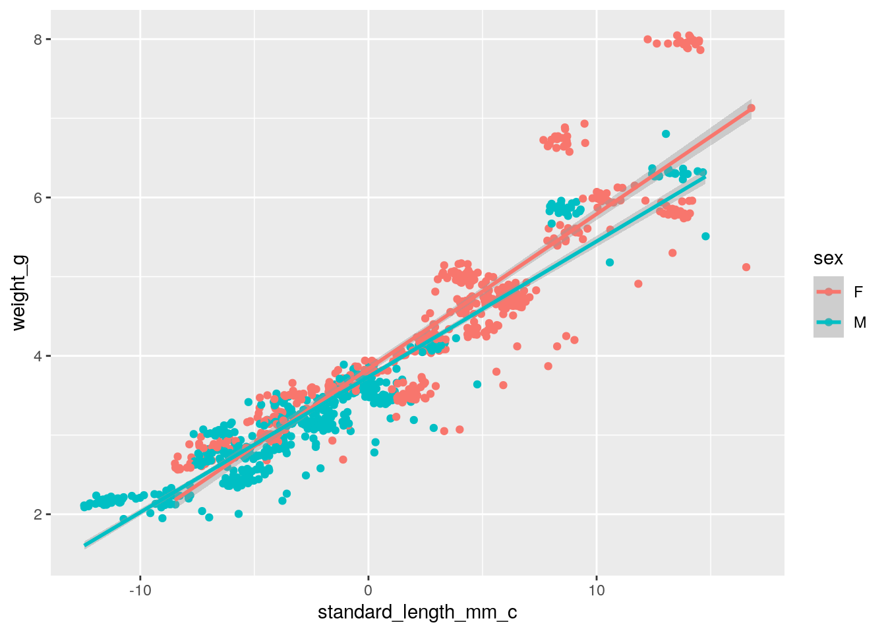
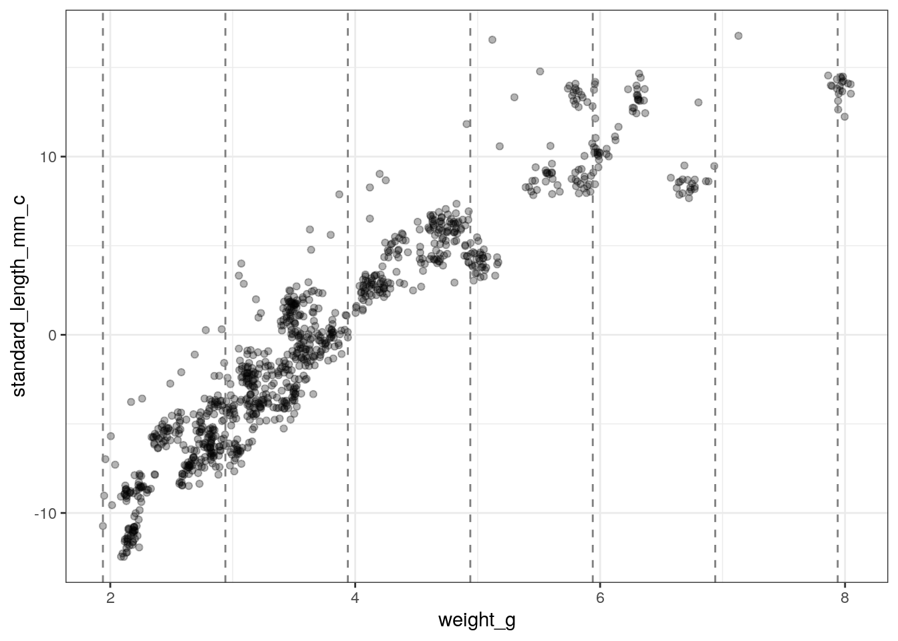
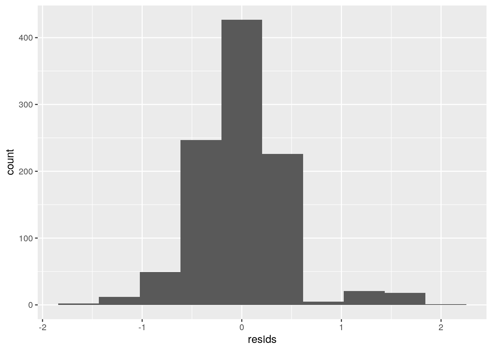
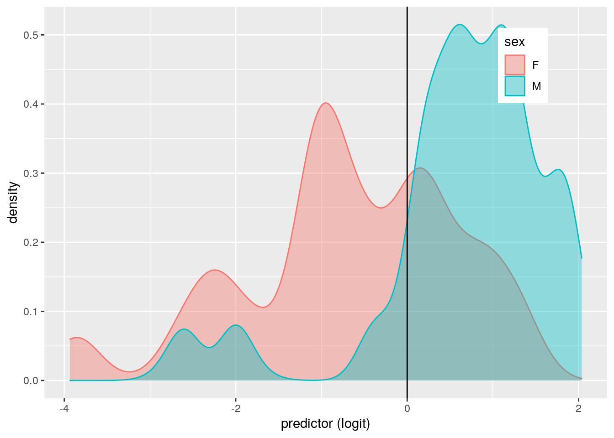
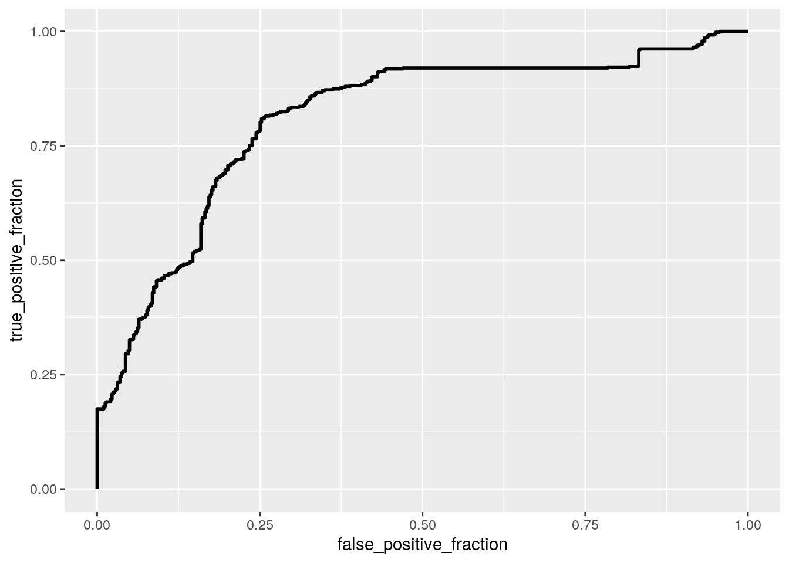

My data comes from a study that tested if using formalin to preserve fish in biological collection causes differents to their size and weight over time. Since many biologists rely on these collections to conduct research, it is important to know that this method is reliable at accurately preserving collected fish. The main variables include fish sex, days since preservation, standard length, fork length, and weight. There are 1,008 observations in this data set.
library(tidyverse)## ── Attaching packages ─────────────────────────────────────────────────── tidyverse 1.3.0 ──## ✓ ggplot2 3.3.2 ✓ purrr 0.3.4
## ✓ tibble 3.0.3 ✓ dplyr 1.0.1
## ✓ tidyr 1.1.1 ✓ stringr 1.4.0
## ✓ readr 1.3.1 ✓ forcats 0.5.0## ── Conflicts ────────────────────────────────────────────────────── tidyverse_conflicts() ──
## x dplyr::filter() masks stats::filter()
## x dplyr::lag() masks stats::lag()data <- read.csv("Delta_Smelt_formalin_preservation_Slater_etal_2020.csv")
data1<-data%>%mutate(preservation_cat = case_when(preservation_day>1000 ~ "high",
preservation_day<=1000 & 100<=preservation_day ~ "med",
preservation_day<100 ~ "low"))With this code, I have added another categorial variable that separates "preservation day" into three categories.
man<-manova(cbind(fork_length_mm, standard_length_mm, weight_g)~preservation_cat, data=data1)
summary(man)## Df Pillai approx F num Df den Df Pr(>F)
## preservation_cat 2 0.05053 8.545 6 1978 3.454e-09 ***
## Residuals 990
## ---
## Signif. codes: 0 '***' 0.001 '**' 0.01 '*' 0.05 '.' 0.1 ' ' 1summary.aov(man)## Response fork_length_mm :
## Df Sum Sq Mean Sq F value Pr(>F)
## preservation_cat 2 13 6.344 0.1276 0.8802
## Residuals 990 49199 49.696
##
## Response standard_length_mm :
## Df Sum Sq Mean Sq F value Pr(>F)
## preservation_cat 2 50 25.091 0.6017 0.5481
## Residuals 990 41284 41.701
##
## Response weight_g :
## Df Sum Sq Mean Sq F value Pr(>F)
## preservation_cat 2 0.16 0.07838 0.0464 0.9546
## Residuals 990 1671.70 1.68859
##
## 15 observations deleted due to missingnesspairwise.t.test(data1$standard_length_mm,data1$preservation_cat, p.adj="none")##
## Pairwise comparisons using t tests with pooled SD
##
## data: data1$standard_length_mm and data1$preservation_cat
##
## high low
## low 0.32 -
## med 0.91 0.30
##
## P value adjustment method: nonepairwise.t.test(data1$fork_length_mm,data1$preservation_cat, p.adj="none")##
## Pairwise comparisons using t tests with pooled SD
##
## data: data1$fork_length_mm and data1$preservation_cat
##
## high low
## low 0.85 -
## med 0.83 0.61
##
## P value adjustment method: nonepairwise.t.test(data1$weight_g,data1$preservation_cat, p.adj="none")##
## Pairwise comparisons using t tests with pooled SD
##
## data: data1$weight_g and data1$preservation_cat
##
## high low
## low 0.66 -
## med 0.87 0.75
##
## P value adjustment method: none## Assumptions
library(rstatix)##
## Attaching package: 'rstatix'## The following object is masked from 'package:stats':
##
## filtergroup <- data1$preservation_cat
DVs <- data1 %>% select(fork_length_mm, standard_length_mm, weight_g)
#Test multivariate normality for each group (null: assumption met)
sapply(split(DVs,group), mshapiro_test)## high low med
## statistic 0.8958143 0.981355 0.8695067
## p.value 5.061135e-10 7.895027e-06 4.479271e-16#If any p<.05, stop. If not, test homogeneity of covariance matrices
#Box's M test (null: assumption met)
box_m(DVs, group)## # A tibble: 1 x 4
## statistic p.value parameter method
## <dbl> <dbl> <dbl> <chr>
## 1 NA NA 12 Box's M-test for Homogeneity of Covariance Matric…#View covariance matrices for each group
lapply(split(DVs,group), cov)## $high
## fork_length_mm standard_length_mm weight_g
## fork_length_mm NA NA NA
## standard_length_mm NA 41.510561 7.897746
## weight_g NA 7.897746 1.689807
##
## $low
## fork_length_mm standard_length_mm weight_g
## fork_length_mm 49.78313 45.380681 8.377500
## standard_length_mm 45.38068 41.783747 7.721684
## weight_g 8.37750 7.721684 1.664066
##
## $med
## fork_length_mm standard_length_mm weight_g
## fork_length_mm NA NA NA
## standard_length_mm NA 41.797797 7.934586
## weight_g NA 7.934586 1.685410I have performed seven tests. There is a 0.302 chance that we have made a type I error. We should adjust the significance value to 0.007. However, there are still no significant differences with the adjusted significance value. This means that time since being preserved does not have an affect on these variables (which is a good thing!). However, when testing for multivariate normality for each group, we were not able to pass our assumptions.
rand_dist<-vector()
for(i in 1:5000){
new<-data.frame(weight=sample(data1$weight_g),preservation_cat=data1$preservation_cat)
rand_dist[i]<-mean(new[new$preservation_cat=="low",]$weight)-
mean(new[new$preservation_cat=="high",]$weight)}
{hist(rand_dist,main="",ylab=""); abline(v = c(-0.0489, 0.0489),col="red")}
mean(rand_dist>0.489 | rand_dist< -0.0489)## [1] 0.3256data1%>%group_by(preservation_cat)%>%summarize(means=mean(weight_g))## `summarise()` ungrouping output (override with `.groups` argument)## # A tibble: 3 x 2
## preservation_cat means
## <chr> <dbl>
## 1 high 3.79
## 2 low 3.84
## 3 med 3.813.841306-3.792418## [1] 0.048888In this randomization test, the null hypothesis is that there is no difference in means between samples that have been preserved for a high amount of time vs those that have only been preserved for a short amount of time. The alternative hypothesis is that there is a difference. The results from our test show that acheiving the null hypthosis by chance is not all that unlikely. There is close to a .90 chance that this result could have been obtained by chance. You can clearly see this when looking at the mean differences between each preservation category: there is only a very small difference in size between those in the high and low class.
library(lmtest)## Loading required package: zoo##
## Attaching package: 'zoo'## The following objects are masked from 'package:base':
##
## as.Date, as.Date.numericlibrary(sandwich)
data1$standard_length_mm_c <- data1$standard_length_mm - mean(data1$standard_length_mm, na.rm=T)
mod<- lm(weight_g~standard_length_mm_c*sex, data=data1)
summary(mod)##
## Call:
## lm(formula = weight_g ~ standard_length_mm_c * sex, data = data1)
##
## Residuals:
## Min 1Q Median 3Q Max
## -1.9542 -0.2523 -0.0204 0.2291 1.7677
##
## Coefficients:
## Estimate Std. Error t value Pr(>|t|)
## (Intercept) 3.836395 0.023514 163.152 < 2e-16 ***
## standard_length_mm_c 0.195525 0.003530 55.384 < 2e-16 ***
## sexM -0.100798 0.032479 -3.103 0.00197 **
## standard_length_mm_c:sexM -0.024433 0.005027 -4.861 1.36e-06 ***
## ---
## Signif. codes: 0 '***' 0.001 '**' 0.01 '*' 0.05 '.' 0.1 ' ' 1
##
## Residual standard error: 0.4504 on 1004 degrees of freedom
## Multiple R-squared: 0.8791, Adjusted R-squared: 0.8788
## F-statistic: 2434 on 3 and 1004 DF, p-value: < 2.2e-16data1 %>% filter(!is.na(weight_g), !is.na(standard_length_mm_c), !is.na(sex)) %>%
ggplot(aes(standard_length_mm_c, weight_g, color = sex)) + geom_point()+
geom_smooth(method="lm")## `geom_smooth()` using formula 'y ~ x'
#assumptions
breaks <- seq(min(data1$weight_g), max(data1$weight_g, len=8))
ggplot(data1, aes(weight_g, standard_length_mm_c)) +
geom_point(alpha=.3) +
theme_bw()+ geom_vline(xintercept=breaks, lty=2,color='gray50')
resids<-lm(weight_g~standard_length_mm_c, data=data1)$residuals
fitvals <- lm(weight_g~standard_length_mm_c, data=data1)$fitted.values
ggplot()+geom_histogram(aes(resids),bins=10) # appears somewhat normal, with a few outliers at the upper end
ks.test(resids, "pnorm", mean=0, sd(resids)) #we reject the null hypothesis of normality##
## One-sample Kolmogorov-Smirnov test
##
## data: resids
## D = 0.063159, p-value = 0.0006434
## alternative hypothesis: two-sidedbptest(mod) # p < 0.05 we reject the null hypothesis of homoscedasticity##
## studentized Breusch-Pagan test
##
## data: mod
## BP = 248.97, df = 3, p-value < 2.2e-16#Adding robust standard errors
coeftest(mod, vcov = vcovHC(mod))##
## t test of coefficients:
##
## Estimate Std. Error t value Pr(>|t|)
## (Intercept) 3.8363946 0.0198898 192.8824 < 2.2e-16 ***
## standard_length_mm_c 0.1955249 0.0056468 34.6256 < 2.2e-16 ***
## sexM -0.1007980 0.0277525 -3.6320 0.0002954 ***
## standard_length_mm_c:sexM -0.0244335 0.0065731 -3.7172 0.0002126 ***
## ---
## Signif. codes: 0 '***' 0.001 '**' 0.01 '*' 0.05 '.' 0.1 ' ' 1# R-squared
sum((fitvals-mean(data1$weight_g))^2)/sum((data1$weight_g-mean(data1$weight_g))^2)## [1] 0.8750813For samples of average standard length that are female, the predicted weight is 3.836. For every 1-unit increase in standard length, there is a 0.195 increase in predicted weight. For samples of an average standard length, those that are female are predicted to have a weight that is 0.1 gram lower than for males. The slope of standard length on weight for males is 0.02 lower than for females. The standard errors do not change much when using robust standard errors and everything remains significant. The results show that there are significant differences in predicted weight based on sex and standard length, and this difference is slight more stark for females compared to males (as seen by the steeper slope for females in the graph). Our model explains about 88% of variation.
class_diag<-function(probs,truth){
tab<-table(factor(probs>.5,levels=c("FALSE","TRUE")),truth)
acc=sum(diag(tab))/sum(tab)
sens=tab[2,2]/colSums(tab)[2]
spec=tab[1,1]/colSums(tab)[1]
ppv=tab[2,2]/rowSums(tab)[2]
f1=2*(sens*ppv)/(sens+ppv)
if(is.numeric(truth)==FALSE & is.logical(truth)==FALSE){
truth<-as.numeric(truth)-1}
#CALCULATE EXACT AUC
ord<-order(probs, decreasing=TRUE)
probs <- probs[ord]; truth <- truth[ord]
TPR=cumsum(truth)/max(1,sum(truth))
FPR=cumsum(!truth)/max(1,sum(!truth))
dup<-c(probs[-1]>=probs[-length(probs)], FALSE)
TPR<-c(0,TPR[!dup],1); FPR<-c(0,FPR[!dup],1)
n <- length(TPR)
auc<- sum( ((TPR[-1]+TPR[-n])/2) * (FPR[-1]-FPR[-n]) )
data.frame(acc,sens,spec,ppv,f1,auc)
}fit<-lm(weight_g~standard_length_mm_c*sex,data=data1)
resids<-fit$residuals
fitted<-fit$fitted.values
resid_resamp<-replicate(5000,{
new_resids<-sample(resids,replace=TRUE) #resample resids w/ replacement
data1$new_y<-fitted+new_resids #add new resids to yhats to get new "data"
fit<-lm(new_y~standard_length_mm_c*sex,data=data1) #refit model
coef(fit) #save coefficient estimates (b0, b1, etc)
})
resid_resamp%>%t%>%as.data.frame%>%summarize_all(sd)## (Intercept) standard_length_mm_c sexM standard_length_mm_c:sexM
## 1 0.02327334 0.003524948 0.0324503 0.005031358Like the robust standard errors, the bootstrap standard errors show very little difference compared to our original standard errors. As such, the p-values are likely to stay similar and significant.
data1$weight_g_c <- data1$weight_g - mean(data1$weight_g, na.rm=T)
log.fit <- glm(sex~weight_g_c+standard_length_mm_c, data=data1, family="binomial")
coeftest(log.fit) ##
## z test of coefficients:
##
## Estimate Std. Error z value Pr(>|z|)
## (Intercept) 0.014645 0.075171 0.1948 0.8455360
## weight_g_c -0.739566 0.199913 -3.6994 0.0002161 ***
## standard_length_mm_c -0.058673 0.036381 -1.6127 0.1068021
## ---
## Signif. codes: 0 '***' 0.001 '**' 0.01 '*' 0.05 '.' 0.1 ' ' 1exp(coef(log.fit))## (Intercept) weight_g_c standard_length_mm_c
## 1.0147524 0.4773208 0.9430155prob <- predict(log.fit, type="response")
table(predict=as.numeric(prob>.5),truth=data1$sex)%>%addmargins## truth
## predict F M Sum
## 0 306 66 372
## 1 177 459 636
## Sum 483 525 1008class_diag(prob, data1$sex)## acc sens spec ppv f1 auc
## M 0.7589286 0.8742857 0.6335404 0.7216981 0.7906977 0.8106596data1$logit<-predict(log.fit,type="link")
data1%>%ggplot()+geom_density(aes(logit,color=sex,fill=sex), alpha=.4)+
theme(legend.position=c(.85,.85))+geom_vline(xintercept=0)+xlab("predictor (logit)")
# ROC curve
library(plotROC)
data1$prob<-predict(log.fit,type="response")
ROC<-ggplot(data1)+geom_roc(aes(d=sex,m=prob), n.cuts=0)
ROC## Warning in verify_d(data$d): D not labeled 0/1, assuming F = 0 and M = 1! In our logistic regression, the predicted odds of being male for those with an average standard length and weight is 1.015. Controlling for standard length, the odds significantly change by a factor of 0.477 with every 1-unit increase in weight. Controlling for weight, the odds change by a factor of 0.943 for every 1-unit increase in standard length. The accuracy of our model is about 76%. Sensitivity is 87% and specificity is about 63% (somewhat low, meaning that true negatives are low). Precision is about 72% meaning that 72% of individuals classified as male were actually male. Our AUC is 0.81, which means that although there is some error, our model is fairly good at predicting male vs female. Our ggplot shows that there is some overlap between the predictors for male and female, which explains the error we see.
data2<-data1%>%select(-flag,-process_date,-processor_id, -total_length_mm, -logit, -prob, -specimen_no, -standard_length_mm, -weight_g)
data2<-data2%>%na.omit()
log.fit2 <- glm(sex~., data=data2, family="binomial")
coeftest(log.fit2) ##
## z test of coefficients:
##
## Estimate Std. Error z value Pr(>|z|)
## (Intercept) -2.98175606 7.85725463 -0.3795 0.7043234
## preservation_day 0.00001024 0.00034911 0.0293 0.9765994
## fork_length_mm 0.04228423 0.10830522 0.3904 0.6962280
## preservation_catlow -0.01807322 0.59327835 -0.0305 0.9756976
## preservation_catmed -0.03085721 0.52911825 -0.0583 0.9534952
## standard_length_mm_c -0.11369902 0.12315767 -0.9232 0.3559036
## weight_g_c -0.71931054 0.20190873 -3.5626 0.0003673 ***
## ---
## Signif. codes: 0 '***' 0.001 '**' 0.01 '*' 0.05 '.' 0.1 ' ' 1exp(coef(log.fit2))## (Intercept) preservation_day fork_length_mm
## 0.05070372 1.00001024 1.04319094
## preservation_catlow preservation_catmed standard_length_mm_c
## 0.98208912 0.96961401 0.89252655
## weight_g_c
## 0.48708797prob <- predict(log.fit2, type="response")
class_diag(prob, data2$sex)## acc sens spec ppv f1 auc
## M 0.7633434 0.8740458 0.6396588 0.7304625 0.7958297 0.8168916This model shows similar relationships on sex than our last one (with weight being a significant predictor). The accuracy of our model is about 76%. Sensitivity is 87% and specificity is about 64% (somewhat low, meaning that true negatives are low). Precision is about 73% meaning that 73% of individuals classified as male were actually male. Our AUC is 0.82, which is very similar to the AUC of our last logistic model and a relatively good value for considering the accuracy of this model.
k=10
data <- data2 %>% sample_frac #put rows of dataset in random order
folds <- ntile(1:nrow(data),n=10) #create fold labels
diags<-NULL
for(i in 1:k){
train <- data[folds!=i,] #create training set (all but fold i)
test <- data[folds==i,] #create test set (just fold i)
truth <- test$sex #save truth labels from fold i
fit <- glm(sex~(.)^2, data=train, family="binomial")
probs <- predict(fit, newdata=test, type="response")
diags<-rbind(diags,class_diag(probs,truth))
}
summarize_all(diags,mean)## acc sens spec ppv f1 auc
## 1 0.7514343 0.7656964 0.7403546 0.7638914 0.7626238 0.8219673Most of our classification diagnostics did not change very much when doing 10-fold CV. One notable difference is the slightly higher specificity for this CV (increasing to 72% from 64% from the in-sample metrics). However, the AUC did not substantial decrease for our CV. The AUC remained at practically the same value, meaning that there is likely very little overfitting in our model.
library(glmnet)## Loading required package: Matrix##
## Attaching package: 'Matrix'## The following objects are masked from 'package:tidyr':
##
## expand, pack, unpack## Loaded glmnet 4.0-2y<-as.matrix(data2$sex)
preds<-model.matrix(log.fit2)[,-1]
cv <- cv.glmnet(preds,y, family="binomial")
lasso_fit<-glmnet(preds,y,family="binomial",lambda=cv$lambda.1se)
coef(lasso_fit)## 7 x 1 sparse Matrix of class "dgCMatrix"
## s0
## (Intercept) 0.10014823
## preservation_day .
## fork_length_mm .
## preservation_catlow .
## preservation_catmed .
## standard_length_mm_c -0.06359875
## weight_g_c -0.39256550# 10-fold CV with lasso selected variables
k=10
data <- data2 %>% sample_frac #put rows of dataset in random order
folds <- ntile(1:nrow(data),n=10) #create fold labels
diags<-NULL
for(i in 1:k){
train <- data[folds!=i,] #create training set (all but fold i)
test <- data[folds==i,] #create test set (just fold i)
truth <- test$sex #save truth labels from fold i
fit <- glm(sex~standard_length_mm_c+weight_g_c, data=train, family="binomial")
probs <- predict(fit, newdata=test, type="response")
diags<-rbind(diags,class_diag(probs,truth))
}
summarize_all(diags,mean)## acc sens spec ppv f1 auc
## 1 0.7592626 0.8769717 0.6321642 0.7258482 0.7924355 0.8187399The variables contained after performing lasso were standard length and weight. This makes sense because weight had a significant effect on the predicted odds of being male and standard length had a nearly signficant effect on the odds of being male. When we perform a 10-fold CV using only the variables that lasso selected, the AUC is 0.814. It does not change very much compared to the AUC from our previous 10-fold CV and the in-sample metrics. This confirms that our original model does not have a lot of overfitting.